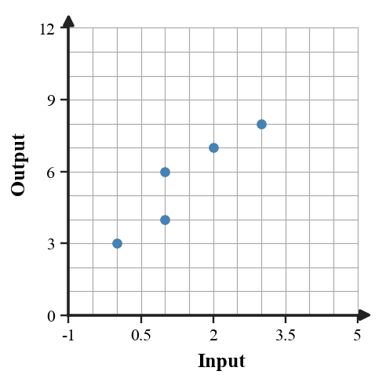

1
For $f(x)=2x+7$, find $f(3)$.
Show enough work to make your reasoning clear. Use the space inside each problem card. When a representation is provided, use it as part of your evidence.
For $f(x)=2x+7$, find $f(3)$.
A table has these outputs as inputs increase by $1$. Which family is most likely: linear, quadratic, exponential, or absolute value? Give one piece of pattern evidence.
| Input | 0 | 1 | 2 | 3 |
|---|---|---|---|---|
| Output | 3 | 6 | 12 | 24 |
Which terms are like terms in $7x+2+5x+9$? Then combine the variable terms.
Is $x=4$ a solution to $3x+2=14$? Show the substitution check.
The table represents a linear relationship. Write an equation for $y$ in terms of $x$.
| $x$ | 0 | 1 | 2 | 3 |
|---|---|---|---|---|
| $y$ | 4 | 7 | 10 | 13 |
The points shown form a relation. Decide whether the relation gives one output for each input and justify using repeated inputs.

Use the table to identify the likely family. Support your choice with a pattern in the outputs.
| $x$ | 0 | 1 | 2 | 3 | 4 |
|---|---|---|---|---|---|
| $y$ | 2 | 5 | 10 | 17 | 26 |
A movie rental service charges \$6 plus \$3 per movie. Write and solve an equation to find how many movies can be paid for with \$27.
The equation $y=3x+2$ and the table are meant to represent the same relationship. Find the first mismatch, explain how you know, and revise the incorrect value.
| $x$ | 0 | 1 | 2 | 3 |
|---|---|---|---|---|
| $y$ | 2 | 5 | 9 | 11 |
A student simplified $5(2x-3)+4x$ as $10x-15+4=10x-11$. Critique the error and revise the simplification.